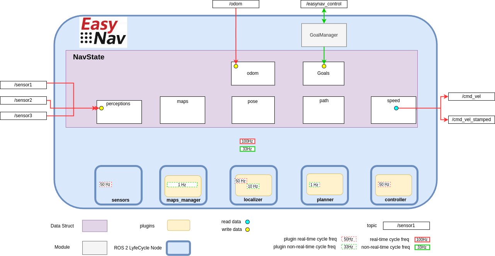

Core Design and Architecture
EasyNav is designed with three core principles in mind: modularity, real-time performance, and extensibility. Its architecture separates concerns into well-defined components, making it both easy to adapt and efficient to execute.
The figure above illustrates the general architecture of EasyNav.
EasyNav runs within a single process that hosts a ROS 2 Lifecycle Node called SystemNode, which coordinates the entire navigation system. Through composition, SystemNode includes several other ROS 2 Lifecycle Nodes, each responsible for a specific function in the navigation pipeline:
Sensors Node: This node collects and preprocesses all sensory input used by the navigation system. It supports multiple types of sensors, grouped by modality (e.g., laser scans, point clouds).
MapsManager Node: Responsible for how the environment is represented. It supports multiple plugins that define the actual data structure for the map: costmaps, gridmaps, octomaps, pointclouds, and more. The plugin selection is configurable depending on the application or use case.
Localizer Node: Estimates the robot’s position within the map. It uses a localization plugin that must be compatible with the type of environment representation used by the MapsManager.
Planner Node: Computes a path from the robot’s current position to its goal (as managed by the GoalManager). The selected plugin determines the planning algorithm used.
Controller Node: Generates velocity commands to follow the planned path. Its functionality is encapsulated in a plugin, which outputs either
TwistorTwistStampedmessages depending on configuration.
Real-Time Execution Model
Another key feature of EasyNav is its emphasis on real-time performance. The navigation system is designed to react with strict timing constraints, minimizing latency from perception to action.
To achieve this, EasyNav separates execution into two distinct control loops:
Real-Time Cycle This loop is optimized for minimal end-to-end latency. Its goal is to process new sensor data and update the robot’s motion commands as quickly as possible. It includes:
perception input processing,
pose prediction via odometry,
and velocity command generation (e.g.,
TwistorTwistStamped).
Non-Real-Time Cycle This loop handles operations where occasional execution delays are tolerable. Tasks in this loop include:
map updates,
localization corrections based on perception (e.g., particle filter resampling),
and path planning.
Each EasyNav module is configured with a frequency for both real-time and non-real-time cycles. These are specified in the parameters as rt_freq and freq, respectively.
Additionally, when new perception data is received, the real-time cycle is triggered immediately, allowing the system to respond as fast as possible and minimize perception-to-action latency.
This dual-cycle model balances responsiveness with computational stability, ensuring critical actions happen with deterministic timing while less urgent tasks are scheduled opportunistically.
Plugin Configuration
Let us examine the parameter file used in the Getting Started section. Each node loads its corresponding plugin by name. The following example shows how plugins are declared for each module:
controller_node:
ros__parameters:
use_sim_time: true
controller_types: [simple]
simple:
rt_freq: 30.0
plugin: easynav_simple_controller/SimpleController
max_linear_speed: 0.6
max_angular_speed: 1.0
look_ahead_dist: 0.2
k_rot: 0.5
localizer_node:
ros__parameters:
use_sim_time: true
localizer_types: [simple]
simple:
rt_freq: 50.0
freq: 5.0
reseed_freq: 1.0
plugin: easynav_simple_localizer/AMCLLocalizer
num_particles: 100
noise_translation: 0.05
noise_rotation: 0.1
noise_translation_to_rotation: 0.1
initial_pose:
x: 0.0
y: 0.0
yaw: 0.0
std_dev_xy: 0.1
std_dev_yaw: 0.01
maps_manager_node:
ros__parameters:
use_sim_time: true
map_types: [simple]
simple:
freq: 10.0
plugin: easynav_simple_maps_manager/SimpleMapsManager
package: easynav_indoor_testcase
map_path_file: maps/home.map
planner_node:
ros__parameters:
use_sim_time: true
planner_types: [simple]
simple:
freq: 0.5
plugin: easynav_simple_planner/SimplePlanner
robot_radius: 0.3
sensors_node:
ros__parameters:
use_sim_time: true
forget_time: 0.5
sensors: [laser1]
perception_default_frame: odom
laser1:
topic: /scan_raw
type: sensor_msgs/msg/LaserScan
group: points
system_node:
ros__parameters:
use_sim_time: true
position_tolerance: 0.1
angle_tolerance: 0.05
Each node declares one or more plugin types (e.g., simple) that can be dynamically selected. The plugin name (e.g., easynav_simple_controller/SimpleController) must match the name registered in the plugin system.
This design allows for easy experimentation with different algorithms or system behaviors simply by modifying configuration files—without changing any source code.
Some applications may not require a full navigation pipeline. For example, systems focused on teleoperation, behavior testing, or hardware validation might not need environment representation, localization, or path planning.
To support such minimal setups, EasyNav provides a Dummy plugin for each core module. These plugins implement the required interfaces but do not perform any real computation. This allows the system to run with minimal overhead while remaining fully compatible with the rest of the EasyNav infrastructure.
Below is an example configuration using dummy plugins for all components, effectively creating a Dummy Navigation System:
controller_node:
ros__parameters:
use_sim_time: true
controller_types: [dummy]
dummy:
rt_freq: 30.0
plugin: easynav_controller/DummyController
cycle_time_nort: 0.01
cycle_time_rt: 0.001
localizer_node:
ros__parameters:
use_sim_time: true
localizer_types: [dummy]
dummy:
rt_freq: 50.0
freq: 5.0
reseed_freq: 0.1
plugin: easynav_localizer/DummyLocalizer
cycle_time_nort: 0.01
cycle_time_rt: 0.001
maps_manager_node:
ros__parameters:
use_sim_time: true
map_types: [dummy]
dummy:
freq: 10.0
plugin: easynav_maps_manager/DummyMapsManager
cycle_time_nort: 0.1
cycle_time_rt: 0.001
planner_node:
ros__parameters:
use_sim_time: true
planner_types: [dummy]
dummy:
freq: 1.0
plugin: easynav_planner/DummyPlanner
cycle_time_nort: 0.2
cycle_time_rt: 0.001
sensors_node:
ros__parameters:
use_sim_time: true
forget_time: 0.5
system_node:
ros__parameters:
use_sim_time: true
position_tolerance: 0.1
angle_tolerance: 0.05
This configuration is especially useful for testing system integration, message flow, and user interfaces without requiring sensor data or a simulated robot. You can later replace dummy plugins with functional ones as needed.